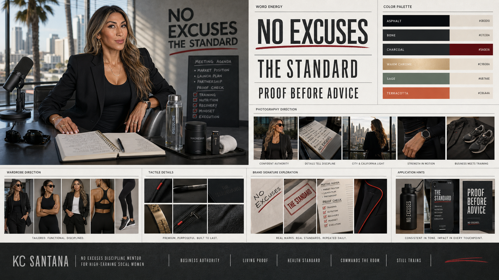
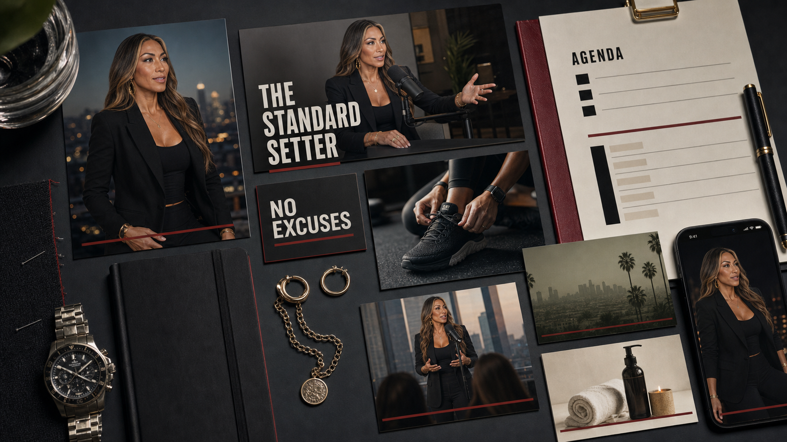
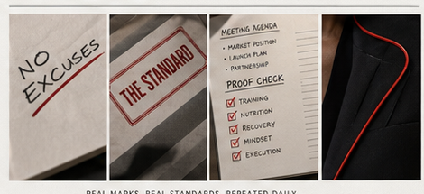
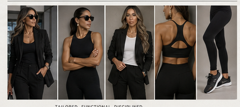
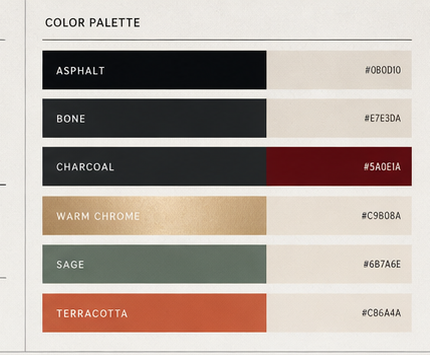
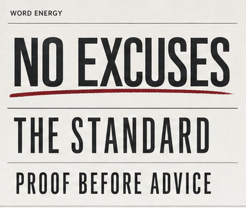
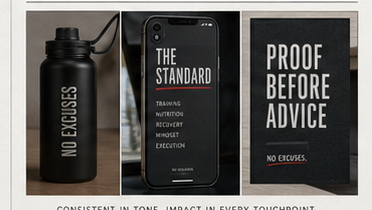
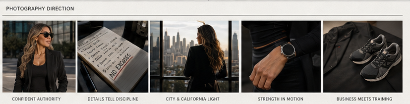

Tailored, premium, direct.
Direction One / Business authority
The Standard Setter.
Tailored black, oxblood proof lines, boardroom presence, athletic evidence, and disciplined recovery.
01
Stylescape
Executive discipline with a visible edge.
Black tailoring, direct type, oxblood marks, city light, training proof, and controlled recovery.

Oxblood proof line.
Business authority with physical discipline.
02
Brand signature
Oxblood line as proof mark.
A decisive line across claims, agendas, wardrobe details, and room materials.

Application sheet
One visual language across podcast, agenda, social, recovery, and wardrobe.

Standard line
Reserved for the strongest statements.

Wardrobe proof
Tailored first, athletic underneath.
03
Color and type
Black authority, controlled heat.
Heavy display type, restrained neutrals, and oxblood used with discipline.
Asphalt#0D0D10
Bone#E7E3DA
Charcoal#242629
Oxblood#8E1518
Warm Chrome#C9B08A
Sage#6B7A6E

Material palette
Blazer black, bone paper, oxblood detail, chrome, sage.

Type energy
Command-led, compressed, readable.

Social proof
Strong enough for feed, stage, and room material.
04
Photography and wardrobe
Boardroom, training, recovery.
Business presence with the work still visible.

Founder strip
Authority, movement, city light, recovery.
Blazer to training
Black blazer, performance tank, running shoe.
Material palette
Polished, warm, and tactile.
05
Applications
How the brand shows up.
Social, agenda, podcast, room material, phone, and recovery details.
Agenda, social, podcast, wardrobe, phone, recovery.
Blazer-led with training proof in frame.
Oxblood line ties the system together.
Proof post
Short command, strong crop.
Signature behavior
Confident, minimal, ownable.
Photography proof
Business and athletic in one world.